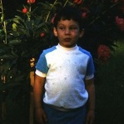
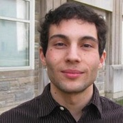
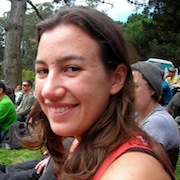
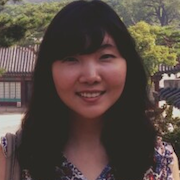
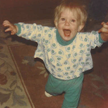
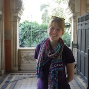

Language and Cognition Lab Retreat 2014
Principal Investigator


Michael C. Frank (blog, twitter)
Mike did his undergraduate degree at Stanford in Symbolic Systems and his PhD work at MIT. He is broadly interested in the relationship between language and cognition, especially as it relates to children's early language development.
Mike did his undergraduate degree at Stanford in Symbolic Systems and his PhD work at MIT. He is broadly interested in the relationship between language and cognition, especially as it relates to children's early language development.
Postdocs


Gabe Doyle
Gabe did his graduate work in linguistics at UC San Diego, and his undergraduate work in math at Princeton. He focuses on computational models of language acquisition, especially for word segmentation and constraint-based phonology, as well as using social media to investigate pragmatics and dialect geography.
Gabe did his graduate work in linguistics at UC San Diego, and his undergraduate work in math at Princeton. He focuses on computational models of language acquisition, especially for word segmentation and constraint-based phonology, as well as using social media to investigate pragmatics and dialect geography.


Emily Hembacher
Emily did her undergraduate work at UC San Diego, and her graduate work at UC Davis. She is interested in how children’s monitoring of their own uncertainty, and uncertainty in their environment, impacts their learning and decision-making. In addition to this line of work, she has recently begun to examine how parents’ understanding of cognitive development interacts with children’s learning.
Emily did her undergraduate work at UC San Diego, and her graduate work at UC Davis. She is interested in how children’s monitoring of their own uncertainty, and uncertainty in their environment, impacts their learning and decision-making. In addition to this line of work, she has recently begun to examine how parents’ understanding of cognitive development interacts with children’s learning.


Dan Yurovsky
Dan did his graduate work at Indiana University and his undergrad at Carnegie Mellon. Having spent some time thinking about infant language learners as physical symbol systems and as attentionally-driven associationists, he's now trying to model them as social inference machines.
Dan did his graduate work at Indiana University and his undergrad at Carnegie Mellon. Having spent some time thinking about infant language learners as physical symbol systems and as attentionally-driven associationists, he's now trying to model them as social inference machines.
Graduate Students


Molly Lewis
Molly completed a B.A. in Linguistics at Reed College in 2009 and then spent two years as a lab manager in Duane Watson's lab at the University of Illinois at Urbana-Champaign. Her research explores the relationship between the form of a word and its meaning at two different timescales: language acquisition and language evolution.
Molly completed a B.A. in Linguistics at Reed College in 2009 and then spent two years as a lab manager in Duane Watson's lab at the University of Illinois at Urbana-Champaign. Her research explores the relationship between the form of a word and its meaning at two different timescales: language acquisition and language evolution.

Ann Nordmeyer
Ann completed a B.A. in Psychology at Smith College, where she worked for three years in the de Villiers lab studying language acquisition and language and thought. She is currently interested in examining pragmatic, semantic, and conceptual issues in the development of negation. Even though she spends her time thinking about negative utterances, she is actually a very positive person!
Ann completed a B.A. in Psychology at Smith College, where she worked for three years in the de Villiers lab studying language acquisition and language and thought. She is currently interested in examining pragmatic, semantic, and conceptual issues in the development of negation. Even though she spends her time thinking about negative utterances, she is actually a very positive person!


Erica Yoon
Erica completed a B.A.Sc. in Cognitive Science at McGill University. She worked in the Onishi lab, studying how infants use cues for speech segmentation, and also how adults interpret sentences with ambiguous meanings. She is interested in looking at how children use linguistic and contextual cues to make inferences about speakers' intentions.
Erica completed a B.A.Sc. in Cognitive Science at McGill University. She worked in the Onishi lab, studying how infants use cues for speech segmentation, and also how adults interpret sentences with ambiguous meanings. She is interested in looking at how children use linguistic and contextual cues to make inferences about speakers' intentions.


Kyle MacDonald
Kyle graduated from Wesleyan University with a B.A. in Psychology in 2010. He is intersted in understanding the importance of social information for language learning. Currently, he is exploring how joint attention supports learning across different contexts and language modalities (spoken vs. signed languages).
Kyle graduated from Wesleyan University with a B.A. in Psychology in 2010. He is intersted in understanding the importance of social information for language learning. Currently, he is exploring how joint attention supports learning across different contexts and language modalities (spoken vs. signed languages).
Research Staff

Mika Braginsky
Mika graduated from MIT in 2014 with a B.S. in computer science and in cognitive science. She's broadly interested in modeling language acquisition, and is specifically working on Bayesian models of noun and verb learning.
Mika graduated from MIT in 2014 with a B.S. in computer science and in cognitive science. She's broadly interested in modeling language acquisition, and is specifically working on Bayesian models of noun and verb learning.


Rose Schneider
Rose hails from Johns Hopkins University, where she graduated with a B.A. in Psychological & Brain Sciences and Classics. She is interested in language and number acquisition, and particularly in how the two cognitive systems are related. When she's not busy managing the lab, you can probably find her cycling.
Rose hails from Johns Hopkins University, where she graduated with a B.A. in Psychological & Brain Sciences and Classics. She is interested in language and number acquisition, and particularly in how the two cognitive systems are related. When she's not busy managing the lab, you can probably find her cycling.
Lab Alums
- Sarah James (Research Assistant)
- Andrew Weaver (Research Assistant)
- Ally Kraus (Research Assistant) - Uber
- Janelle Klaas (Research Assistant)
- Theresa Hennings (Research Assistant) - current graduate student at UW
- Stephan Meylan (Research Assistant) - current graduate student at UC Berkeley
- Alexandra Horowitz (Graduate Student) - Kidaptive
- Chigusa Kurumada (Graduate Student) - faculty at University of Rochester
- Marisa Casillas (Research Assistant) - postdoc at MPI Nijmegen
- Alex Stiller (Master's Student) - instructor at San Diego Mesa College
Former Honors Students
- Sarah Lucy Case (2015) - Human Biology
- Rachel Chung (2015) - Science, Technology, and Society
- Nicholas Moores (2015) - Linguistics
- Elise Sugarman (2014) - Symbolic Systems Laura Soriano (2014) - Human Biology
- Kaia Simmons (2013) - Human Biology
- Stephanie Muscat (2013) - Human Biology
- Rebecca Chung (2012) - Symbolic Systems